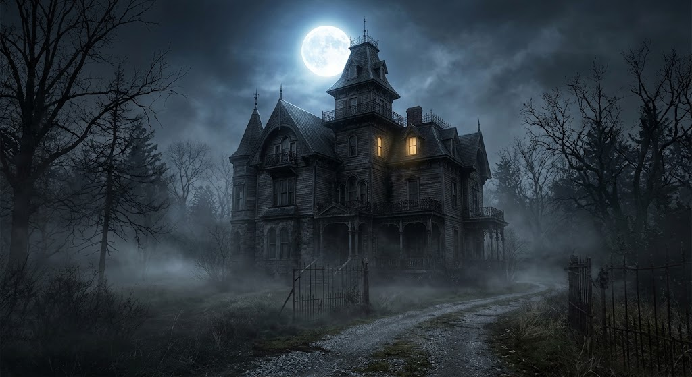

The Phantom Pianist
Often heard echoing from the grand ballroom at midnight, playing haunting classical melodies on an untuned piano.
Your ultimate guide to local folklore, ghastly specters, and spooktacular traditions
Whispering Pines Manor was built in the late 1800s by the enigmatic Lord Alistair Blackwood. The manor has a rich history filled with tales of mystery and intrigue, from secret passageways to hidden treasures. Over the years, it has been the site of numerous paranormal investigations, making it a hotspot for ghost enthusiasts.

Over the decades, visitors have reported sightings of several distinct entities within the manor's halls.
Often heard echoing from the grand ballroom at midnight, playing haunting classical melodies on an untuned piano.
If you plan to visit the estate on All Hallows' Eve, make sure to follow these essential customs: